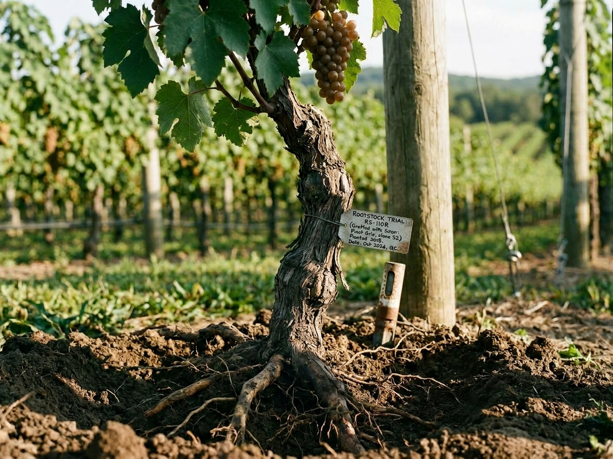
Vineyards & Growing
Vines, rootstock, soil, trellising, irrigation, canopy management, frost protection, harvest equipment and the realities of a growing season.
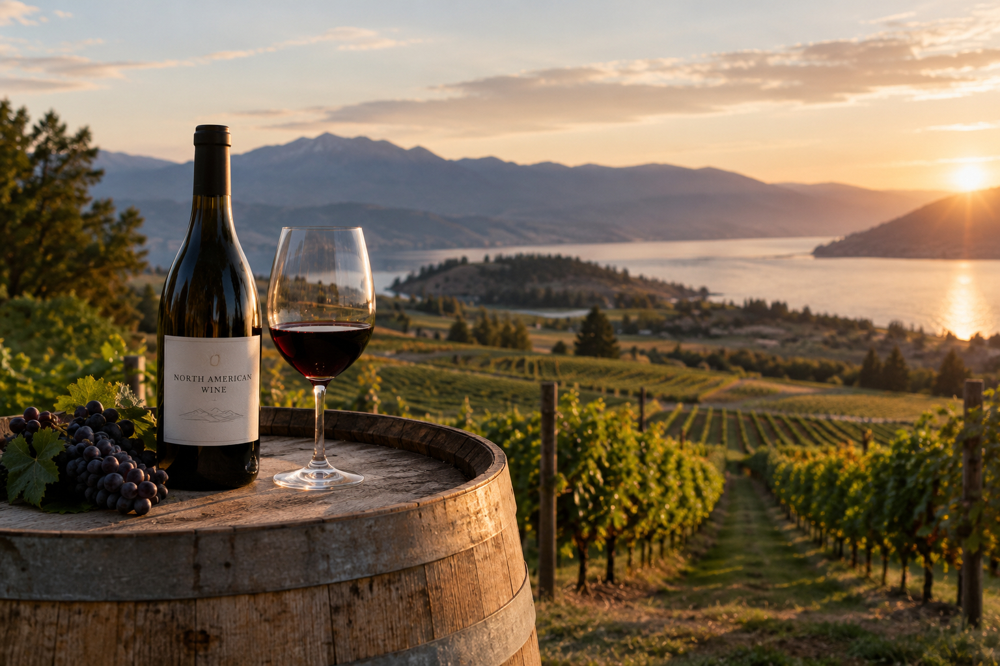
The publication has been assigned an ISBN and registered as a forthcoming book with a projected publication date of February 2027.
The ISBN establishes the book as a formal publication within the NORTH AMERICAN WINE annual program.
A bottle can suggest a vineyard, a grape, a vintage or a region. Yet wine is also the result of land, climate, cultivation, labor, machinery, cellar design, fermentation, storage, transport, commerce and accumulated knowledge.
Behind each bottle is a network of growers, wineries, nurseries, barrel makers, glass manufacturers, equipment suppliers, laboratories, distributors, hospitality businesses and regional institutions.
NORTH AMERICAN WINE follows that larger world.
It is not a scorecard, buying guide or collection of tasting notes. It is a documentary record of the material culture and working systems of wine across the continent—from vineyard soil to cellar, from production to place.
Each annual edition records another point in a field shaped by weather, craft, technology, regional identity and changing markets.
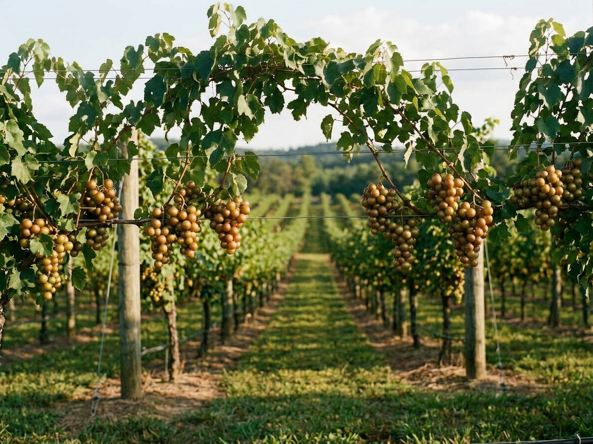
Soil, geology, slope, water, weather, exposure and the regional conditions that shape a vineyard.
Growers, cellar teams, cooperages, equipment makers, laboratories and the people behind each stage.
Pruning, harvesting, crushing, fermentation, aging, blending, bottling and preservation.
Each annual edition records what changes, what endures and what distinguishes the wine world of its time.

Vines, rootstock, soil, trellising, irrigation, canopy management, frost protection, harvest equipment and the realities of a growing season.
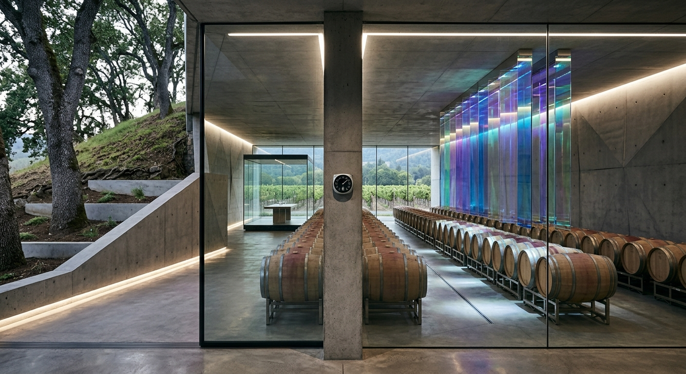
Crushers, presses, tanks, pumps, temperature control, fermentation vessels, laboratories, cellar architecture and production systems.
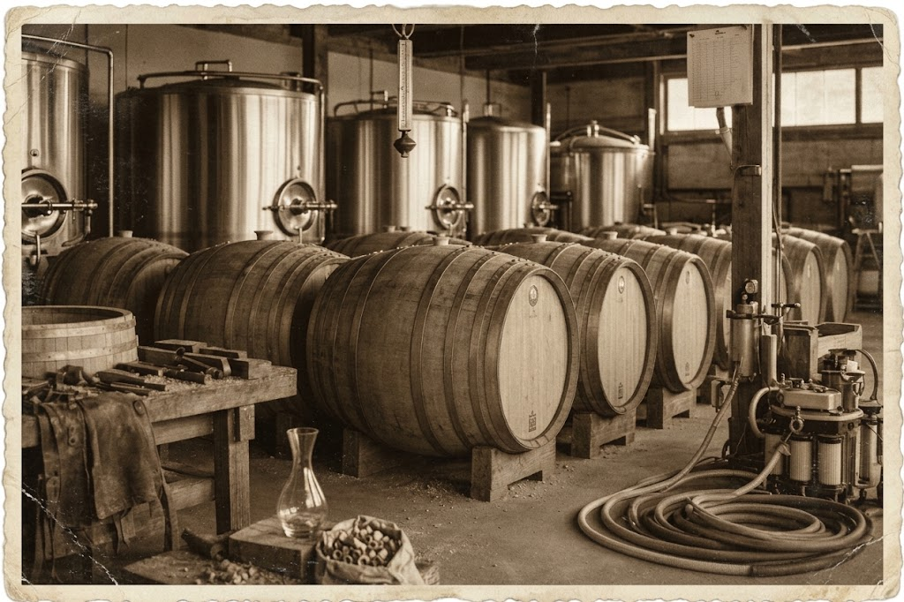
Cooperage, oak, stainless steel, concrete, glass, cork, closures, hoses, filters and the materials that shape production and aging.
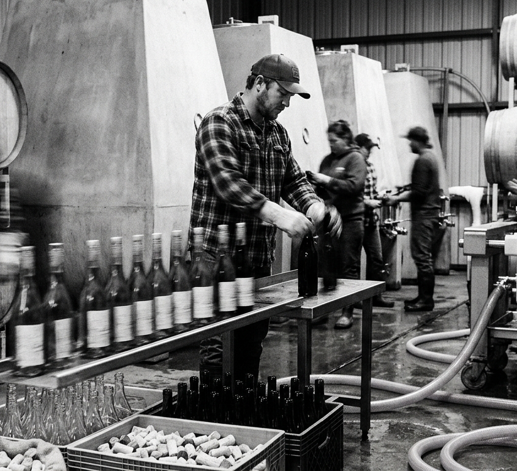
Bottles, labels, capsules, closures, bottling lines, case goods, shipping materials and the systems that protect wine after production.
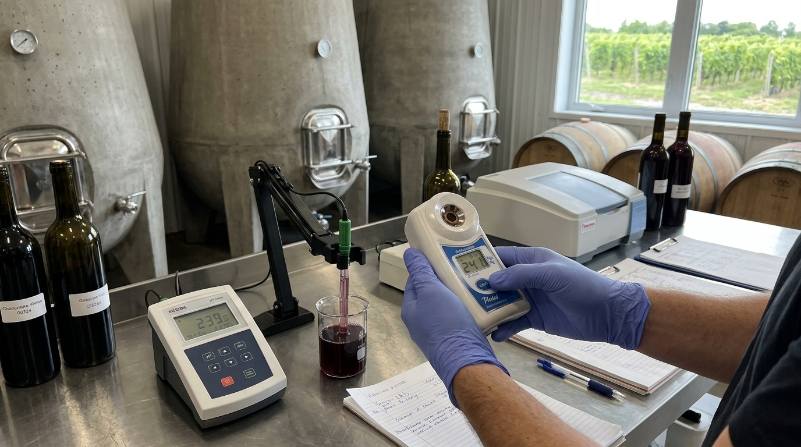
Laboratory testing, chemistry, microbiology, sensory practice, records, technical instruments and the knowledge used to make decisions.
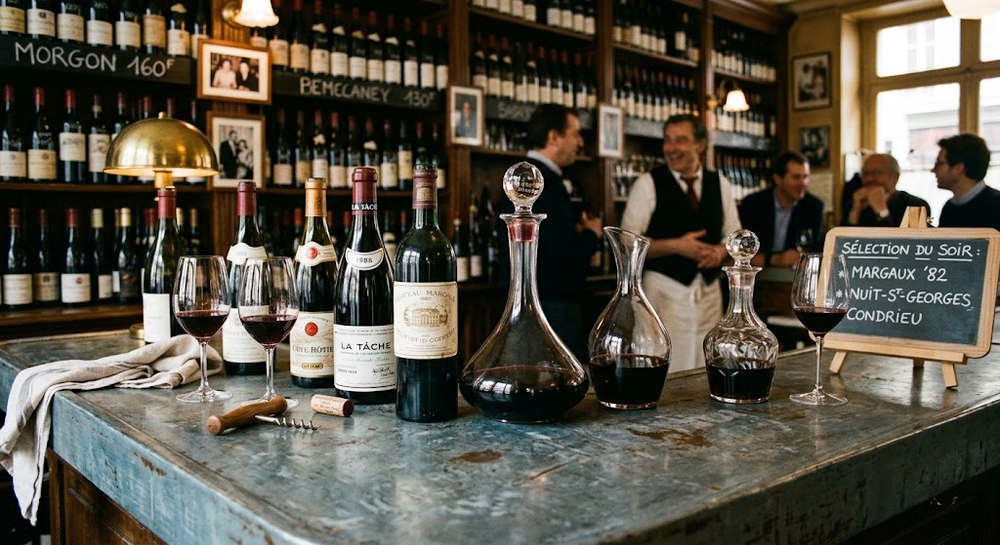
Tasting rooms, winery shops, wine bars, regional routes, visitor experiences and the places where wine meets its public.
Land, vines, climate, cultivation and the decisions of the growing season.
Timing, picking, handling and the movement of fruit from vineyard to winery.
Crushing, pressing, fermentation and the conversion of grape into wine.
Aging, blending, monitoring and the evolution of structure and character.
Stabilization, filtration, cellar conditions and preparation for bottling.
Glass, closures, labels, cases and the systems that protect the finished wine.
Warehousing, shipping, retail, hospitality and direct customer relationships.
Records, vintages, regional knowledge and the annual documentation of a changing field.
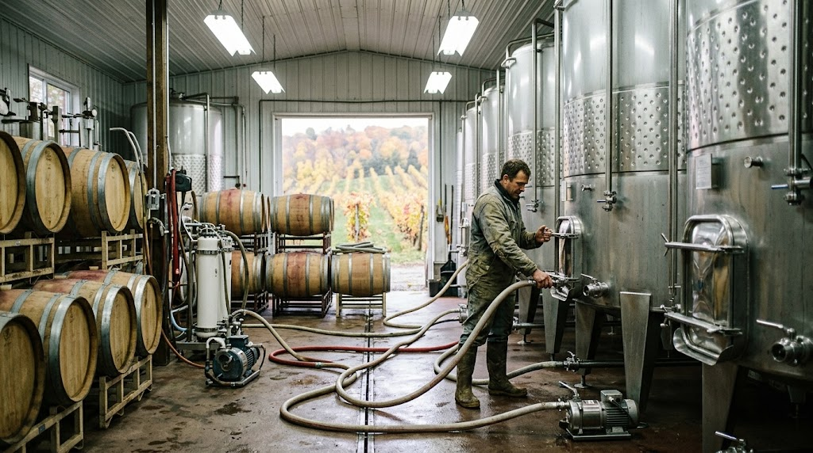
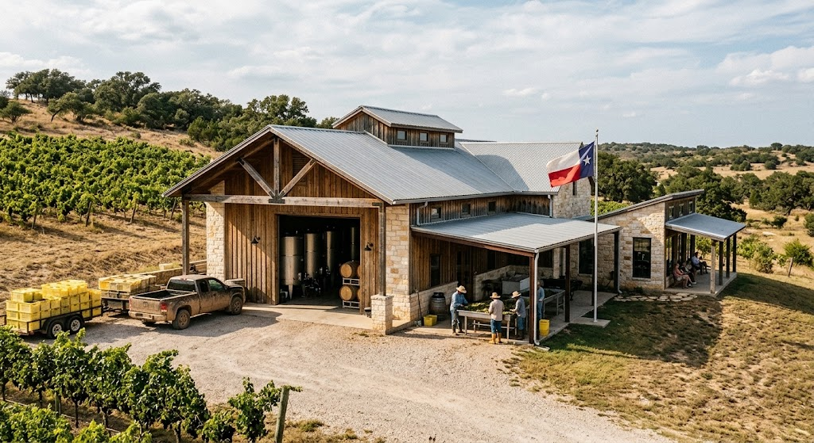
A grower can describe a vineyard. A winery can explain its fermentation choices. A cooperage can show how barrels are made. An equipment company can document a press or tank.
But the larger relationship between place, plant, equipment, process, skill and market is rarely preserved as a connected record.
NORTH AMERICAN WINE establishes that broader context in physical form, bringing the many parts of the field into one continuing documentary publication.
Eligible wineries, vineyards, growers, producers, makers, suppliers, specialist businesses and institutions may be formally identified in the annual edition. A listing establishes an organization's relevant place in the documented wine world; it does not determine editorial conclusions.
Independent wineries, estate vineyards, grower-producers, family operations and distinctive producers whose work helps define a region or a way of making wine.
Wine-growing areas, regional associations, appellation organizations and institutions preserving the knowledge, identity and development of a place.
Vine nurseries, rootstock specialists, trellis and irrigation suppliers, vineyard equipment makers and businesses serving the growing cycle.
Presses, tanks, pumps, filters, temperature-control systems, laboratory instruments, barrels, glass, closures and production infrastructure.
Barrel makers, glass and packaging specialists, label printers, fabricators and other makers whose materials enter the finished bottle.
Distributors, wine retailers, tasting rooms, wine bars, restaurants, hospitality businesses and specialist channels connecting wine with its audience.
Enologists, viticulturists, laboratories, educators, historians, cellar specialists and other experts whose knowledge helps explain how the field works.
NORTH AMERICAN WINE is conceived as a recurring annual, not a one-time directory. Each edition establishes a new documentary snapshot while retaining continuity with the larger wine world.
Each edition identifies a selected body of wineries, growers, makers, suppliers, regions and specialists whose work helps establish the year's record.
New producers, vineyard practices, technologies, facilities, materials and regional developments may enter subsequent editions as the field changes.
Each annual edition adds another layer to the documentary history of North American wine: its places, people, tools, processes and commercial systems.
A commissioned treatment developed around a winery, vineyard, growing practice, production process, facility, archive or regional specialty. Research, interviews, fieldwork, photography and editorial development are scoped to the undertaking. The resulting work may contribute to a broader documentary record.
A separate commissioned publication devoted to a winery, grower, maker, supplier, region or specialized practice. The resulting work can become a durable institutional record of the organization and the knowledge behind its work.
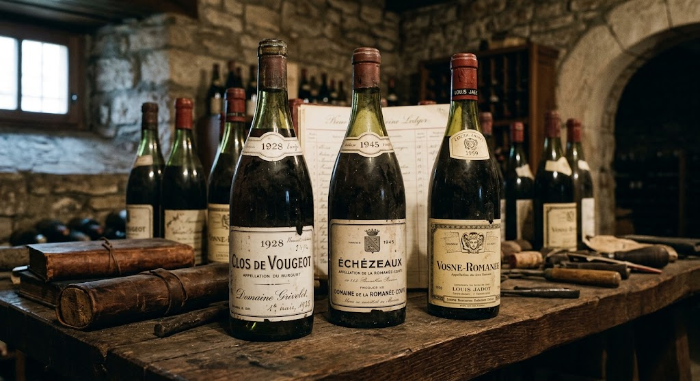
Regional histories, producer records, technical documents, vintage materials, catalogs, maps and other evidence establish the world behind the bottle.
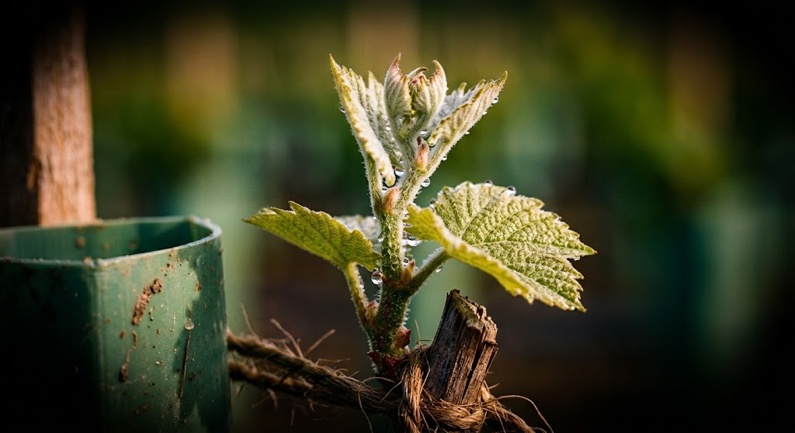
Vineyards, cellars, cooperages, nurseries, laboratories, bottling lines, tasting rooms and other places where the subject exists in working form.
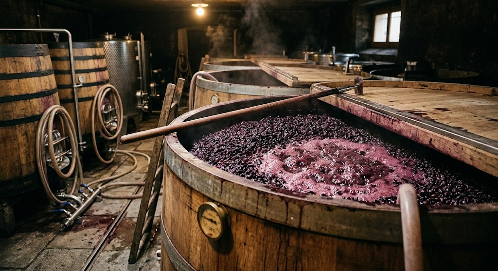
Growing, harvesting, pressing, fermenting, aging, blending, bottling and the practical decisions that shape wine.
A NORTH AMERICAN WINE edition begins with research and may move across fieldwork, interviews, photography, archival material, technical evidence, process documentation and publication.
The resulting record can preserve knowledge that rarely fits on a label: how a vineyard developed, how a winery works, how equipment changes production, how a region adapts, or how a specialist's knowledge has been carried across generations.
For a participating organization, its place in the annual offers a durable physical context beyond a single release, vintage, campaign or website.
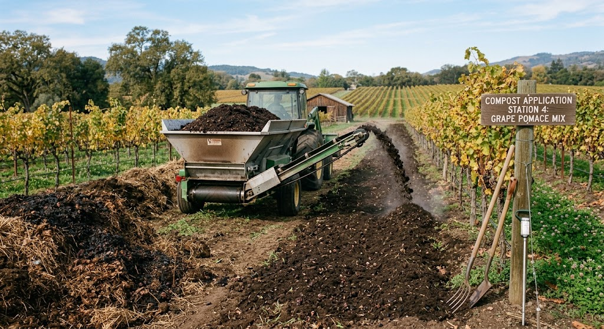
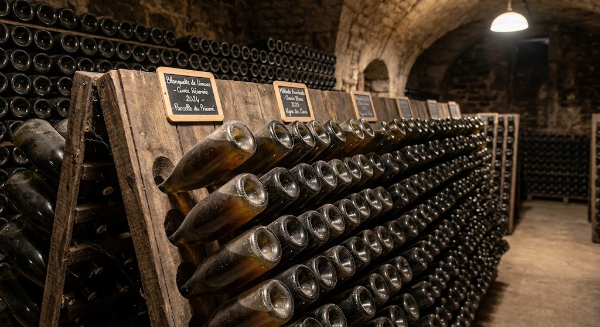
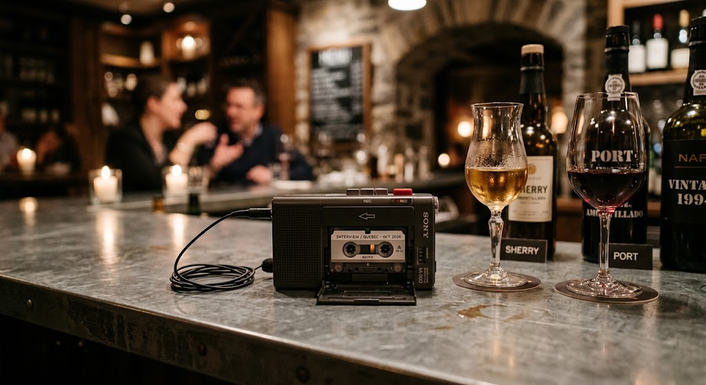
Each annual edition brings together vineyards, producers, regions, equipment, materials, processes, historical evidence and specialist knowledge in one coherent documentary publication.
It is intended for the people already involved in this world: wineries, growers, wine professionals, makers, suppliers, retailers, collectors, libraries, archives and institutions.
The annual is not a tasting-score guide or a directory of bottles. It is a documentary record of the material, regional and commercial systems through which North American wine is made.
Its physical form matters. A substantial hardcover can remain in a winery, tasting room, shop, office or library as a lasting record of the field and a book that can be offered to customers who want to take part of that world home.
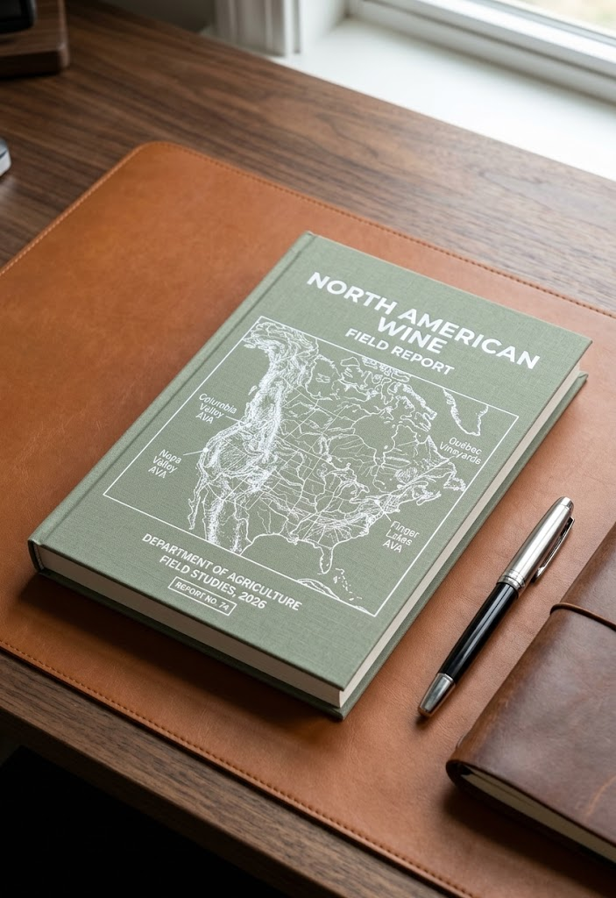
The images presented on this website are not necessarily the photographic record of the NORTH AMERICAN WINE publication.
Website imagery may include original photography, illustrations, photographic composites, interpretive reconstructions, publication mockups, and images created or modified with generative image tools. These visuals establish atmosphere, subject, material context and the intended character of the publication.
Where appropriate, captions identify images as documentary photography, composite, illustration, reconstruction or mockup.
The physical annual is different. Images published as documentary evidence in the book will be real photographic or archival images of actual vineyards, wineries, products, materials, facilities, processes, people and places. Generative imagery will not be used as documentary evidence in the book.
The distinction is intentional: the website presents the project; the book records the material world.
We are identifying North American wineries, vineyards, growers, regional organizations, nurseries, cellar-equipment makers, cooperages, laboratories, packaging specialists, distributors, retailers and other businesses whose work forms part of the wine world.
Eligible organizations may be considered for the annual documentary record, with opportunities to discuss wholesale copies for their own retail and customer channels, as well as separate documentary work where appropriate.